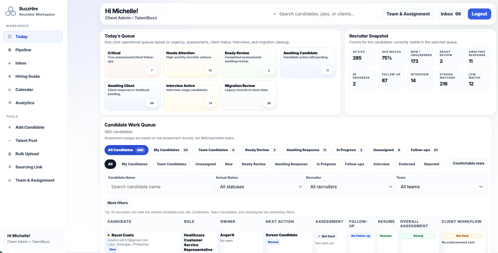
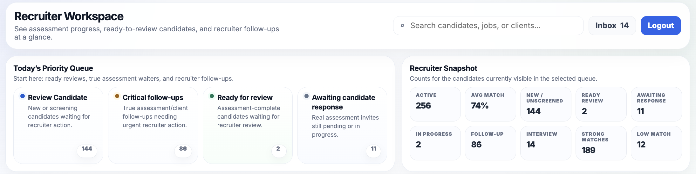
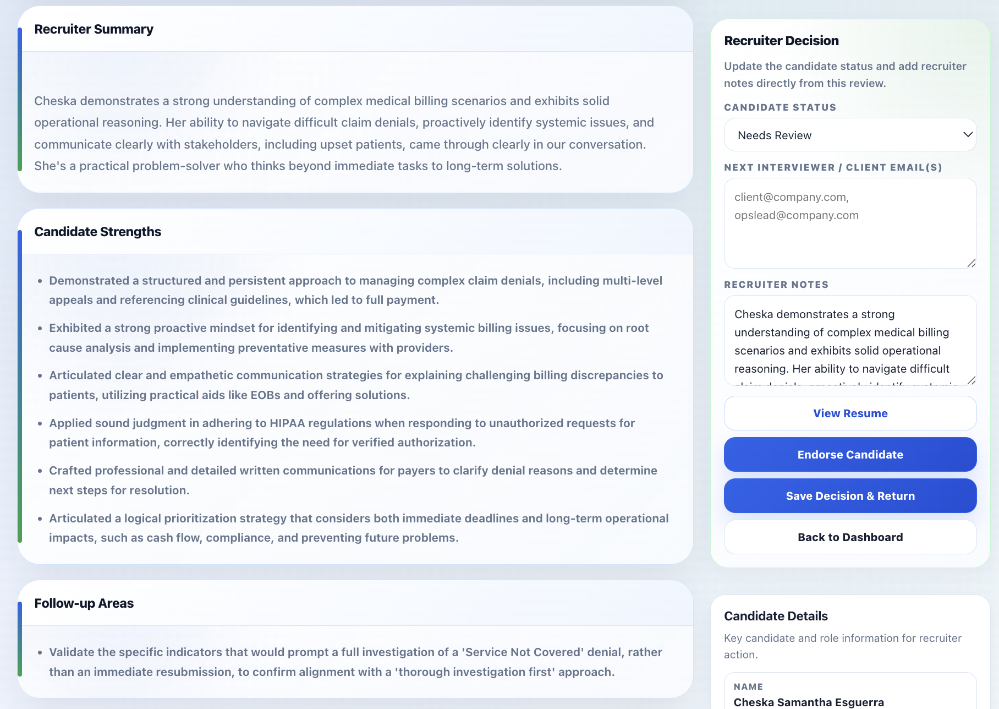
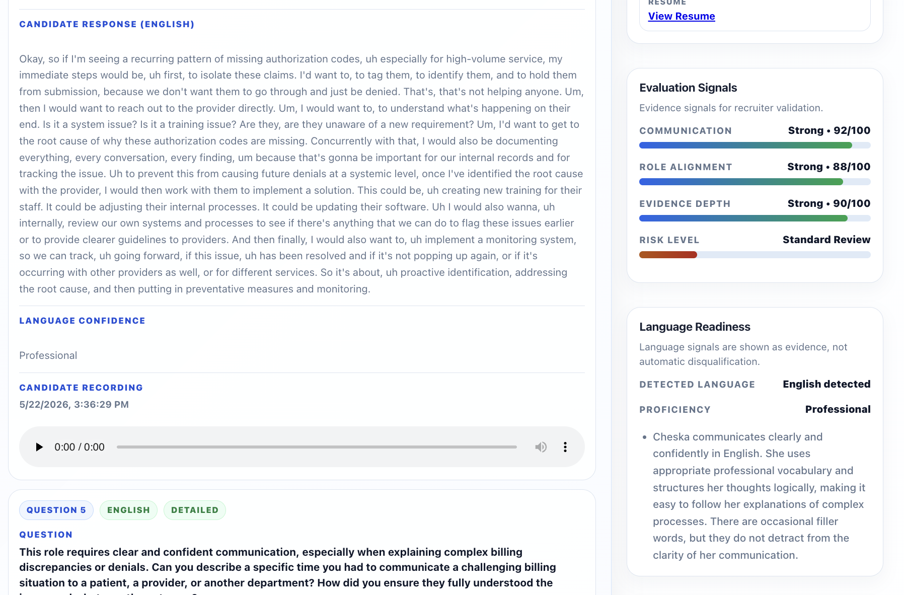
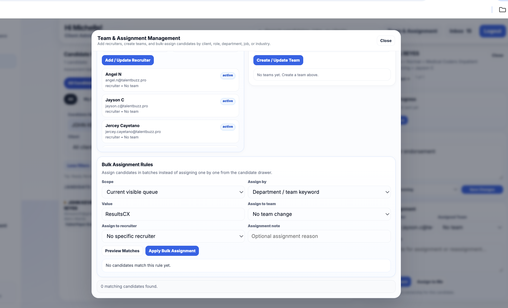

Most ATS platforms track applicants. BuzzHire structures recruiter workflows.
BuzzHire helps recruitment teams move beyond passive applicant tracking with recruiter prioritization, proof-based candidate screening, multilingual-ready evaluations, interview coordination, and hiring visibility through structured operational workflows.
Recruitment workflows built beyond traditional applicant tracking.
Most hiring systems organize applicants. BuzzHire helps recruitment teams structure the work behind hiring: who to review, what to prioritize, what evidence supports a candidate, and how teams move from screening to interview coordination with clarity.
Proof-Based Candidate Screening
Evaluate candidates through structured assessments, talent conversations, communication reviews, and recruiter-ready evidence instead of resumes alone.
Action-Oriented Recruiter Queues
Help recruiters see what needs attention next across reviews, follow-ups, endorsements, screening steps, and interview coordination.
Multilingual-Ready Evaluations
Support structured candidate evaluations for multilingual and distributed hiring environments without losing consistency or visibility.
Structured Hiring Coordination
Centralize endorsements, recruiter collaboration, hiring manager reviews, scheduling workflows, and candidate movement.
Built for recruiter operations — not just applicant storage.
Traditional ATS platforms help teams track candidates. BuzzHire is designed to help recruiters operate with better structure, prioritization, evidence, and hiring visibility.
Traditional ATS
- • Tracks applicants in a pipeline
- • Relies heavily on resumes and manual notes
- • Leaves recruiter prioritization unclear
- • Fragments evaluations, follow-ups, and coordination
- • Offers limited structure for multilingual hiring workflows
BuzzHire
- • Structures recruiter workflows around action queues
- • Supports proof-based candidate evaluations
- • Helps recruiters prioritize what matters next
- • Centralizes hiring visibility and team coordination
- • Supports multilingual-ready screening and reviews
See how BuzzHire supports real recruiter operations.
BuzzHire gives recruitment teams the operational layer they need to prioritize work, evaluate candidates through evidence, and keep hiring decisions moving with structure.
Action-oriented recruiter workspaces.
Help recruiters prioritize candidate reviews, follow-ups, assessments, and interview coordination from a centralized operational workspace built around daily recruiting activity.


Structured recruiter prioritization.
Operational queues help recruiters focus on urgent follow-ups, ready reviews, candidate responses, interview-stage candidates, and workflow items that need attention first.
Recruiter-ready candidate evaluations.
Structured candidate reviews combine recruiter summaries, candidate strengths, communication quality, role alignment, and evidence-backed assessment details so teams can review fit with more context.



Multilingual-ready hiring workflows.
Support multilingual candidate evaluations through structured communication reviews, language readiness signals, conversation evidence, and recruiter-ready validation.
Built for scalable recruitment teams.
Coordinate recruiters, assignment workflows, endorsements, and candidate distribution across operational hiring teams with team-level visibility and bulk assignment controls.

Designed around how hiring actually moves.
BuzzHire connects the early-to-mid hiring workflow so recruiters and hiring teams can move from application to evaluation, endorsement, and interview coordination with better structure and consistency.
Workflow structure still matters more than the tool itself.
BuzzHire was built from actual operational recruitment experience across recruitment, customer experience, QA, training, BPO operations, multilingual hiring, hiring coordination, and workflow management.
The platform focuses on helping recruitment teams improve recruiter prioritization, candidate visibility, evaluation consistency, hiring coordination, and operational scalability.
Built for hiring teams that need structure, speed, and clarity.
BuzzHire helps teams reduce manual screening friction, improve recruiter coordination, and create more consistent hiring workflows without removing recruiter judgment from the process.
Reduce Manual Screening
Help recruiters focus on qualified, interview-ready candidates earlier in the hiring process.
Create Consistent Reviews
Standardize candidate evaluations and hiring visibility across recruiters and hiring teams.
Improve Coordination
Centralize endorsements, follow-ups, interview scheduling, and hiring collaboration.
Support Growth
Create scalable recruitment workflows without dramatically increasing operational overhead.
Designed for operational hiring environments.
BuzzHire is especially effective for teams hiring in environments where communication quality, workflow structure, multilingual readiness, and recruiter coordination matter.
Built by an operator who understands hiring.
Michelle Giray, Founder of BuzzHire and TalentBuzz, brings more than 19 years of experience across recruitment, customer experience, QA, training, operations, and BPO environments.
After years working closely with recruitment and operational hiring workflows, she consistently observed how fragmented screening processes, inconsistent evaluations, and disconnected hiring coordination slowed growing teams down.
BuzzHire was built to help recruitment teams operate more efficiently through structured hiring workflows designed around real operational hiring challenges.
Recruitment meets workflow discipline.
BuzzHire is shaped by practical experience across the workstreams that influence hiring quality and team performance.
Structured recruitment workflows for modern hiring teams.
Whether you’re scaling multilingual support teams, improving recruiter coordination, or reducing operational hiring friction, BuzzHire helps teams build more structured and operationally aligned recruitment workflows.